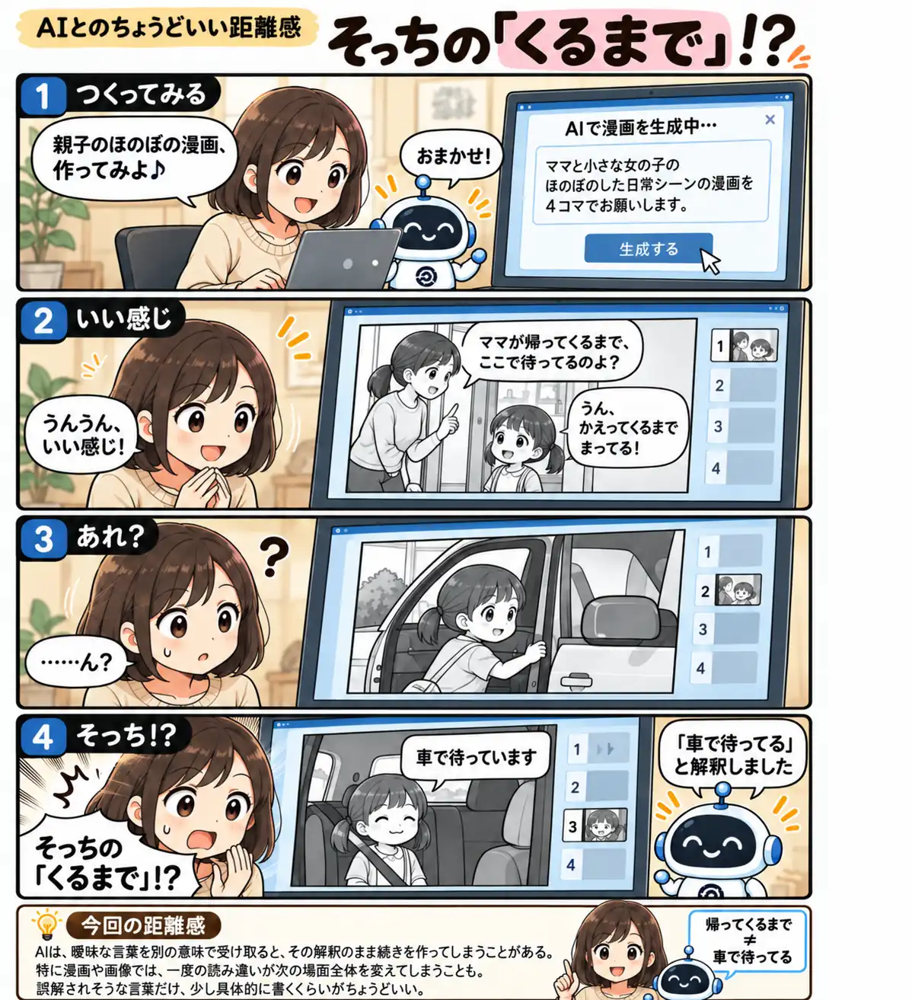

#137
そっちの「くるまで」！？
一言の読み違いで、次のコマが別世界。

メモ
人間なら前後の流れから自然に一つの意味として読む言葉でも、AIが同じ区切り方をするとは限りません。しかも漫画や画像では、その小さな解釈が人物の行動や背景、小物までつながって、後ろの場面全体を変えてしまうことがあります。
「そこだけそんなに拾う？」というズレも、生成AIのおもしろいところ。意図と違ったら、まず最初に食い違った言葉を探してみると、原因が意外と小さな一言だったりします。
実は今回の漫画を作るときにも、「漫画は白黒にして！」と指示したところ、最初に生成された画像はページ全体がモノトーンになりました。こちらとしては作中に登場する漫画だけを指していたつもりでしたが、これも言葉足らずでしたね。
今回の距離感
AIは文脈を読んでくれることもあるけれど、曖昧に読める言葉を別の意味で受け取ると、その解釈のまま続きを作ってしまうことがある。特に漫画や画像では、一言の読み違いが次の場面全体を変えてしまうことも。誤解されそうな言葉だけ、少し具体的に書くくらいがちょうどいい。